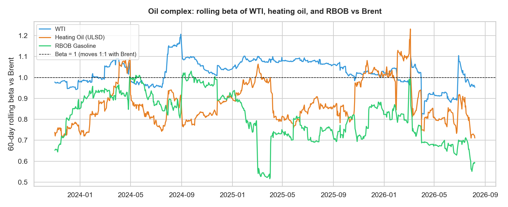
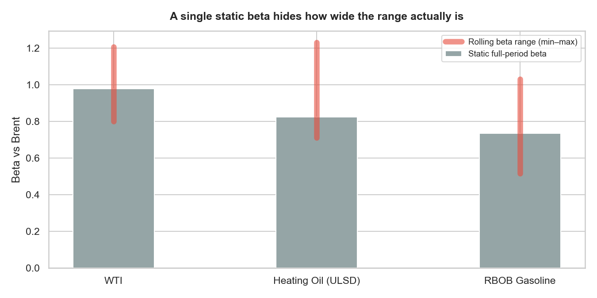
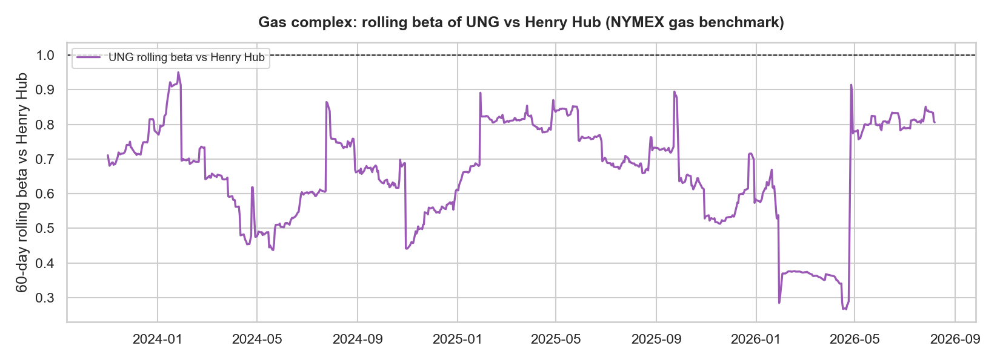
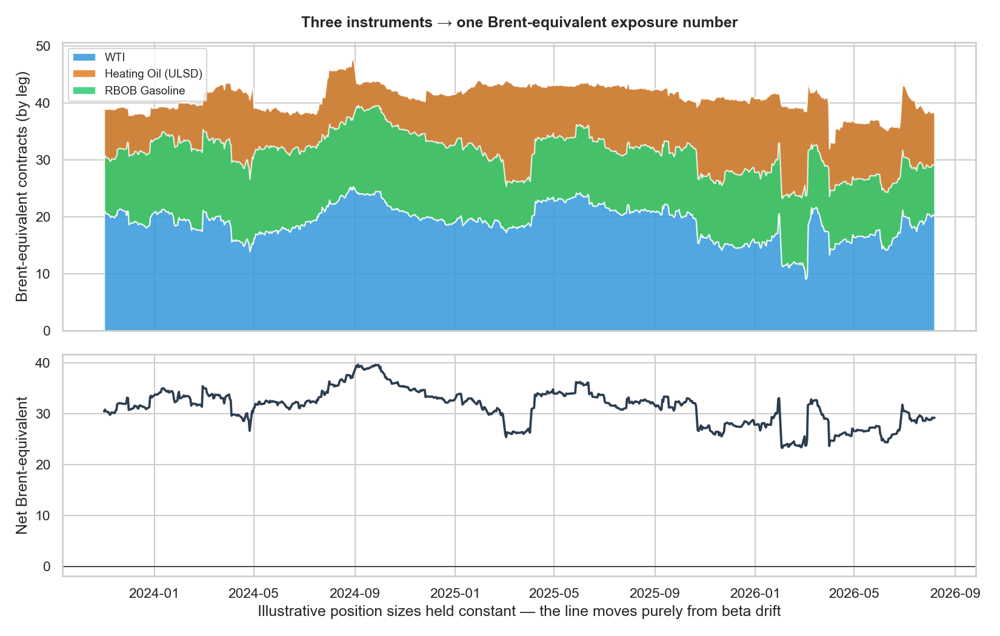

Crude, heating oil, and gasoline don't move as one thing — but a risk desk still needs to answer "what's my net exposure?" in a single number. This is the technique that gets you there, and why it has to be recalculated constantly rather than fixed once.
A book that holds crude oil alongside refined products — heating oil, gasoline — isn't holding one risk, it's holding several correlated but distinct ones. Reporting "40 lots of WTI, -25 of heating oil, 15 of RBOB" tells a risk committee almost nothing about net directional exposure, because the three don't move one-for-one with each other or with the benchmark everyone actually prices the complex off of.
This is a real problem on any desk that runs a multi-instrument commodity book: dozens of line items, no single number that says "if the complex moves 1%, I make or lose X." Monitoring a diverse commodity portfolio day to day means constantly translating disparate instruments into one comparable unit — this project rebuilds that translation from first principles using public market data.
The obvious first move is a single regression beta per instrument, computed once over the full history, then used to convert every position into benchmark-equivalent units. I rejected that as the sole answer: a static beta hides exactly how much the relationship moves around, and in commodities that relationship moves a lot — refining margins widen and narrow, product-specific supply shocks hit gasoline without touching crude, and correlations that hold in calm markets can break during a dislocation.
I used a rolling-window OLS beta instead — recomputed continuously as new data arrives — and benchmarked two separate complexes the way a desk actually would: the oil/products complex against Brent (the reference contract the complex is priced off), and a gas-linked instrument against Henry Hub, the standard NYMEX natural gas benchmark used for the North American gas complex.
Static full-period beta only. Produces one clean number, but hides the width of the range the true relationship actually travels through — which is the part that matters when you're sizing risk, not describing history.
Rolling 60-day OLS beta per instrument, benchmarked by complex. Oil/products vs. Brent, gas-linked exposure vs. Henry Hub — mirrors how these two complexes are actually benchmarked, and shows the drift a static number can't.
A note on the benchmark: a desk typically benchmarks the oil complex to the 3rd-month Brent contract specifically to avoid front-month expiry and roll noise. That exact contract series isn't available in free public data, so this demo uses front-month continuous Brent as a public stand-in — the regression methodology is identical either way.
Rolling covariance and variance computed vectorized across the full return series — beta = Cov(instrument, benchmark) / Var(benchmark) — rather than looping window by window.
Free public futures and ETF price history (Brent, WTI, heating oil, RBOB, Henry Hub, UNG) — the same technique carries over directly to Bloomberg-sourced desk data.
Static, report-ready charts for the written analysis below.
The interactive tool further down this page recomputes rolling beta client-side from the same return data — no backend, no dependency on a charting library staying online.
Using three years of daily data, WTI, heating oil (ULSD), and RBOB gasoline were each regressed against Brent on a rolling 60-day window. The static full-period beta looks tidy — WTI at 0.98, heating oil at 0.82, RBOB at 0.73 — but that single number erases how much the relationship actually moves.


The sharpest single move in the dataset is WTI's beta vs. Brent dropping from roughly 0.99 to 0.80 within a few trading days in early April 2026 — a reminder that a beta measured a week earlier can already be stale exactly when a book needs it most.
North American gas exposure gets benchmarked the same way, against Henry Hub — the NYMEX reference contract for the gas complex. Here the demo uses UNG, a Henry-Hub-linked ETF, as the instrument being expressed in Henry Hub terms.

The point of computing beta isn't the beta itself — it's what it lets you do next: multiply each instrument's position by its current beta and sum the result into one benchmark-equivalent exposure. Holding an illustrative position constant (40 lots WTI, -25 heating oil, 15 RBOB — chosen only to demonstrate the mechanics, not a real book), the net Brent-equivalent number still moves substantially over time, purely because the betas underneath it are drifting.

With these fixed illustrative positions, the net Brent-equivalent exposure ranged from roughly 23 to 40 units over the three-year window — a range wide enough that a risk report relying on a stale beta could misstate net exposure by nearly half.
This isn't a static chart — it recomputes rolling beta in your browser from the same three years of daily return data used above. Pick an instrument pair and a window length and watch the beta series update.
Shorter windows react faster but get noisier; longer windows smooth the noise but lag a real shift. Try dragging the window down to 20 days around the sharpest kink in the WTI line.
The real desk convention benchmarks to the 3rd-month contract to sidestep front-month roll noise. Free data for that specific contract isn't available, so I used front-month continuous Brent and documented the substitution rather than presenting it as identical — the beta-weighting math doesn't change, only which exact series stands in for "the benchmark."
The interactive tool needed to recompute rolling beta client-side from raw daily returns, fast enough to feel live as someone drags the window slider. A vectorized JS loop over a ~750-point series turned out to be fast enough without needing a library — 60 lines of plain JavaScript, no dependency to keep updated.
The honest takeaway is the same one that shows up on a real desk: a beta is a snapshot, not a constant. Treating it as fixed is what makes a hedge look adequate on the day it was sized and inadequate by the time it's tested. Recomputing it continuously — and being able to see, not just assume, how wide its range actually is — is the difference between a risk number you can trust and one that's quietly stale.